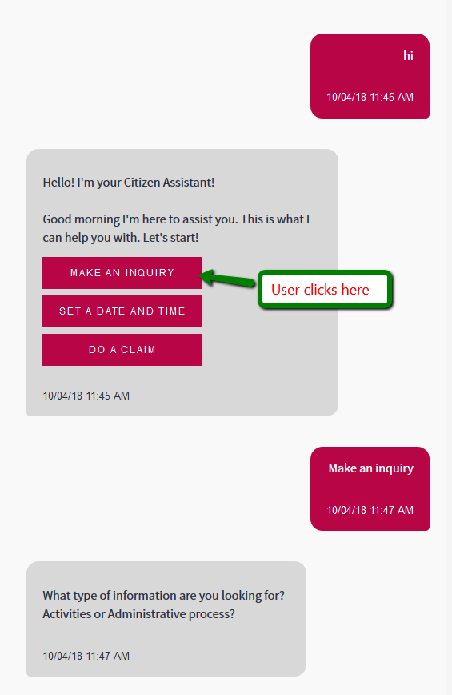
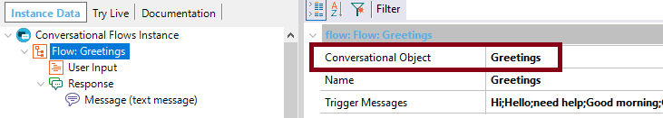
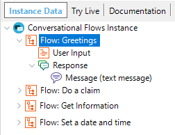
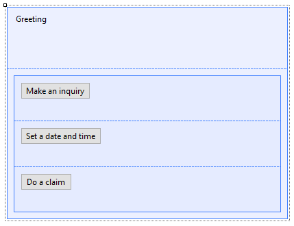

This document explains how to send a message to the Chatbot from any user event (such as a menu item). Its purpose is to show the user a Web or SD panel where he/she is presented with many options to choose from, and after selecting any of them, the Chatbot is notified so it can answer according to the inquiry made by the user. ExampleConsider that when the user or the Chatbot greets, the first action of the Chatbot is to tell the user what he can talk about; take a look at the figure below:  Note that the user selects an action from an action list, and the Chatbot repeats the user's intention, so it's clear what the intent to be processed is: "Make an inquiry." Afterward, the Chatbot answers the user after the message has been processed by the NLP provider. How to implement itDefining the Flows of the conversationIn this example, the "Greetings" Flow looks as follows:  Note that the Conversational Object set for the Flow is the "Greetings" object, which in this case is a Web panel (it could be an SD panel). Depending on the selection made by the user, one of the following Flows show be triggered:
So, the Conversational Flows object looks like the following picture:  To trigger any of these Flows, a valid message has to be sent to the NLP Provider, so the intent is correctly identified. Look at the Trigger Messages property of each Flow, to know which messages should be used to trigger the intent. The "Greetings" Web panel form is as follows:  Defining the UI objects of the FlowThe code of the Conversational Object panel ("Greetings Web panel") is as shown below:
Event Start
GreetingsProcedure(&greeting)
GreetingLbl.Caption = format(!"%1 I'm here to assist you. This is what I can help you with. Let's start!",&greeting)
Endevent
Event 'Get Information' //On click event for "Make an inquiry" button.
GlobalEvents.BotEvent(!"Make an inquiry")
Endevent
Event 'Schedule an activity' //On click event for "Set a date and time" button
GlobalEvents.BotEvent(!"Set a date and time")
Endevent
Event 'Do a claim' //On click event for "Do a claim" button
GlobalEvents.BotEvent(!"Do a claim")
Endevent
First, in the "Start Event," a procedure is called that takes part of the greeting message, depending on the hour of the day. Then, each button has an associated event, which notifies the Chatbot that there is a new message. The message that you will use to trigger the Flow has to be a valid Trigger Message for that Flow, as previously explained. When the event is executed, the Chatbot services are triggered, and a response is sent to the user as if the user had entered his query typing the message in the message box of the Chatbot. This is because you are using the Global Events functionality. How does this work behind the scenes?The GlobalEvents.BotEvent event is defined in the objects "PanelChatWeb" and "PanelChatSD" generated. As in the example, you are using these objects, the corresponding GlobalEvents.BotEvent is triggered, which receives the message, and sends it to the NLP provider.
Event GlobalEvents.BotEvent(&Send)
Do 'SendMessage'
Endevent
Sub 'SendMessage' //Send Message
&WebClient = &WebNotification.ClientId
&NotificationInfo = new()
&PreviousContext = GetChatMeta(&UserId, &Instance)
NewMessage(&UserId, ChatbotMessageTypes.User, &Send, "", &PreviousContext, "", &WebClient, &Instance)
GridSent.Refresh()
CommonChatbots.SendMessage.Submit("", &Instance, ChatbotPlatform.Web, &Send, "", &PreviousContext, &WebClient)
Do 'NotifyOtherClients'
&Send.SetEmpty()
endsub
The CommonChatbots.SendMessage procedure calls the SendMessage method. Note: You don't have to program these events, because they are already defined in the objects PanelChatWeb and PanelChatSD generated. Download the sampleTake a look at the complete example in HowTo: Build a chatbot using GeneXus. The solution is in the CitizenSDAdv and CitizenAdv instances of the example. |
| Backlinks |
| Toc:Chatbots in GeneXus |